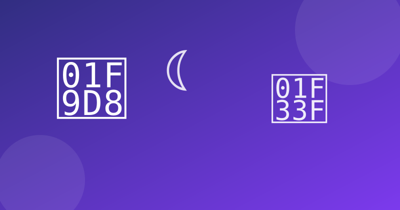

5 Best Free Meditation Apps for Android (2026)

Most meditation apps are free to download and then ask you to pay before the first real session starts. We checked the most popular free meditation apps on Android for one question: which one actually lets you meditate for free — guided sessions, sleep help and breathing exercises — without a subscription wall?
What we tested
- Truly free content — how much you can use without paying anything
- Guided meditations — beginner courses, session lengths, variety of teachers
- Sleep help — sleep stories, sleep meditations and calming sounds
- Ads & interruptions — whether ads break a quiet moment
- Everyday use — timers, reminders, offline downloads, tracking your streak
1. Medito — best completely free app
Medito is run by a nonprofit foundation, and it shows: everything is free, with no ads and no subscription at all. You get guided meditation courses, breathing exercises, sleep stories and a customisable timer, all without an account or a paywall. The library is smaller than the big commercial apps and the design is plain, but for a daily practice that costs nothing — ever — nothing else comes close.
2. Insight Timer — best free library
Insight Timer offers one of the largest free meditation libraries anywhere, with well over 100,000 guided meditations, plus sleep music, talks and a simple timer for unguided sessions. Most of it is genuinely free; an optional MemberPlus subscription unlocks courses and offline listening. The sheer choice can feel overwhelming at first, but if you want variety — different teachers, lengths and styles — this is the free app to beat.
3. Calm — best for sleep
Calm is free to download and some of its programs are free forever, with no ads at all — but most of its best content, including the famous Sleep Stories, sits behind a paid subscription (around $70 a year). If falling asleep is your main problem, the free sessions are a fair taste of its slow, polished style; just know that the full library is a paid app wearing a free trial's clothes.
4. Headspace — best for complete beginners
Headspace is the friendliest teacher of the group: structured beginner courses, short guided sessions and clear explanations of how meditation actually works. The free tier covers the basics and a handful of sessions, but most courses need the subscription (also around $70 a year). Start here if you have never meditated and want someone to walk you through it — then decide whether the subscription is worth it.
5. Smiling Mind — best free app for families
Smiling Mind is another nonprofit, fully free app, built around structured mindfulness programs for adults, teenagers and children. It is less flashy than Calm or Headspace and its library is smaller, but the programs are thoughtfully sequenced and there is genuinely nothing to pay for. A strong pick if you want to meditate with your kids, or you just want a calm app with no upsell.
Quick comparison
| App | Free content | Ads | Best for |
|---|---|---|---|
| Medito | Everything, forever | None | Free daily practice |
| Insight Timer | Very large library | None | Variety of teachers |
| Calm | Some sessions free | None | Sleep Stories |
| Headspace | Basics + taster sessions | None | Complete beginners |
| Smiling Mind | Everything, forever | None | Families & kids |
Note: prices and free-tier features change often — always check the Play Store listing before installing. We never link to cracked or modded apps.